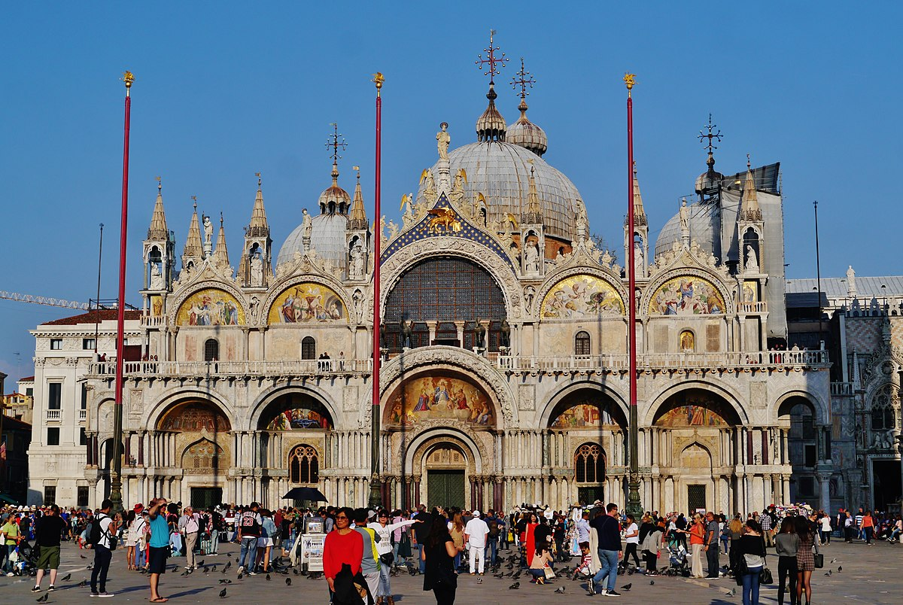

Div3:
My Travels

Visiting my favorite place on Earth, Amsterdam - 2019

Riding through Venice Italy - 2019


Visited Berlin, Germany to see the Neuschwanstein Castle - 2019
Div2:
Images
St. Mark's Basilica in Venice - local image

Twitter icon image - in images directory

McLaren 720s - remote image